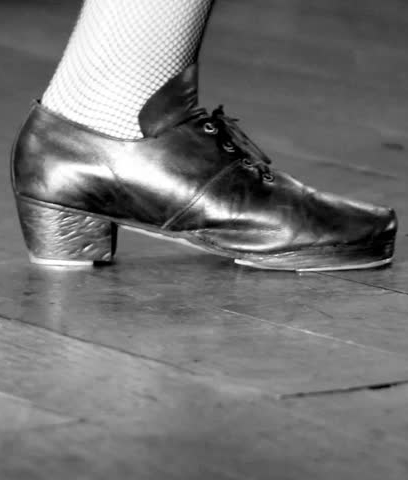
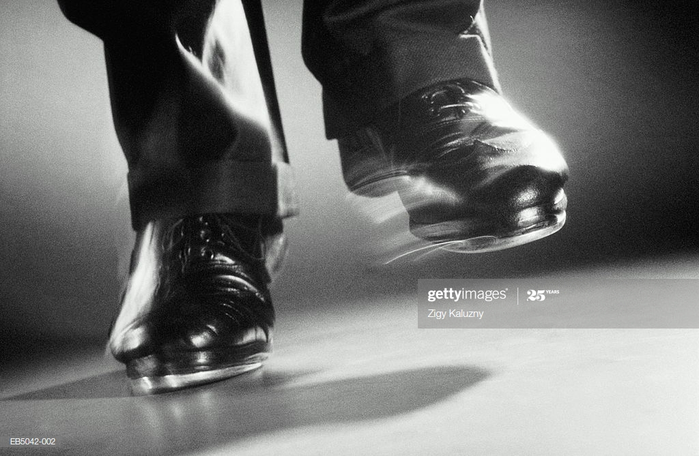

Tap Dancing

Tap Shoes
In the earliest years of tap dancing, tap shoes often had wooden soles, but most tap shoes since have had leather soles. Today, it is common for manufacturers of tap shoes to also produce and fix taps. There are a variety of styles of shoe: the Oxford is very common in jazz dance and the Mary Jane is common for younger girls in tap classes.